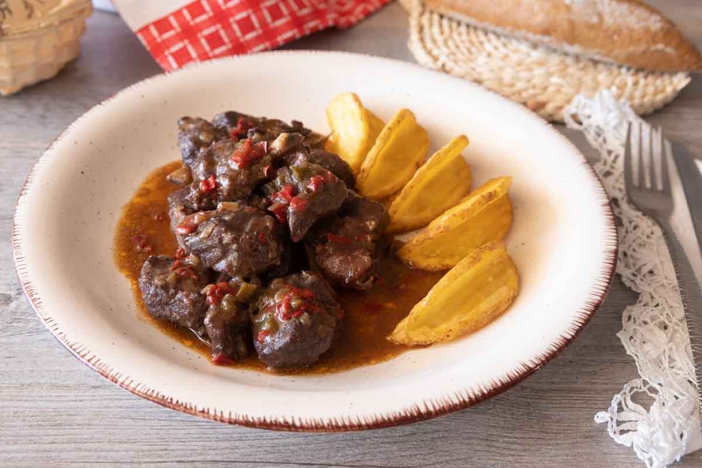
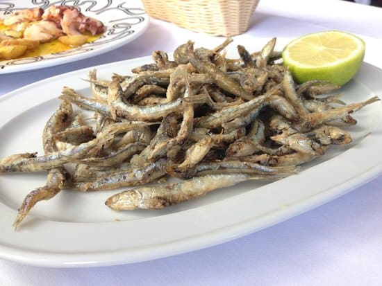
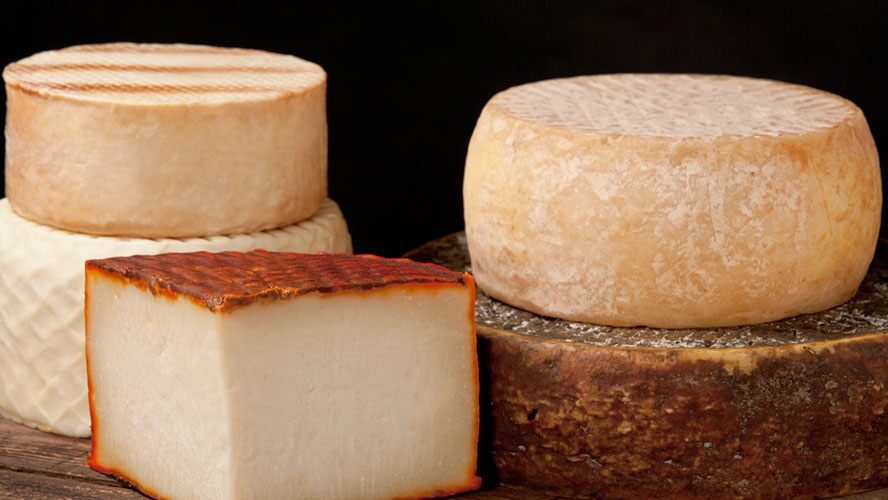

Comidas

Carne de cabra |
La Carne de Cabra es uno de los platos estrella de la comida típica majorera que debes degustar una vez visites la isla. Este sabroso plato está compuesto por: carne de cabra, cebolla, aceite de oliva, zanahorias, papas, pimiento rojo, vino tinto, sal, comino y tomillo. Además, este tipo de carne también la puedes encontrar en el famoso Puchero canario, similar a un cocido. |

Sancocho |
El Sancocho es un plato típico de pescado asado, con papas, batata, gofio y mojo picón.Cada uno de los ingredientes de este delicioso plato se sirven de forma separada, por un lado se sirve el pescado, sin caldo, y por otro lado, las papas y batatas. También el gofio tiene su propio plato y el mojo se coloca en un recipiente para poder servirlo al gusto. |

Pejines |
Los Pejines son un tipo de pescado pequeño similar a los boquerones, que se sirven de entrantes en algunos restaurantes donde la oferta principal son productos como el pescado o el marisco. Este tipo de pescado se sirve por raciones y se puede comer entero, desde la cabeza hasta la cola, debido a su pequeño tamaño. |

Queso Majorero |
Una de las características de este queso es que para su elaboración se utiliza una hoja de palma para así moldear la corteza y la base. Además, su superficie puede ser de distintos colores dependiendo de si ha sido frotada con aceite, gofio o pimentón. En su interior consiste en un queso de aspecto blanco-amarillento y con textura cremosa o semidura. Cuando está curado puede tener un sabor más picante y fuerte; pero cuando está fresco su sabor es más suave. |